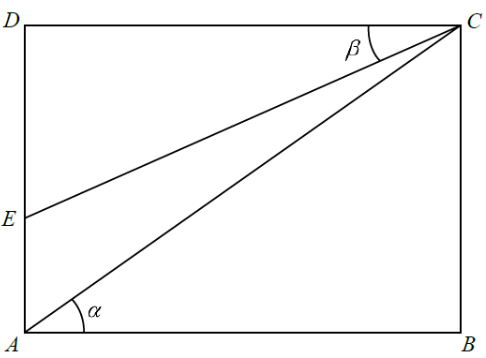

[2019 MC #22]
In the figure, \(ABCD\) is a rectangle. \(E\) is a point lying on \(AD\). Find \(\dfrac{CE}{AC}\).
A. \(\dfrac{\sin\alpha}{\sin\beta}\)
B. \(\dfrac{\cos\alpha}{\cos\beta}\)
C. \(\sin\alpha\sin\beta\)
D. \(\cos\alpha\cos\beta\)

Figure (original exam diagram)
STEP 1 · Spot the right triangles
Because \(ABCD\) is a rectangle, \(\angle ABC = 90^\circ\) and \(\angle CDE = 90^\circ\).
So both \(\triangle ABC\) and \(\triangle CDE\) are right-angled triangles.
STEP 2 · Triangle ABC
In \(\triangle ABC\), the right angle is at \(B\), and the angle at \(A\) is \(\alpha\).
The side opposite \(\alpha\) is \(BC\), and \(AC\) is the hypotenuse.
Cosine Ratio in a Right Triangle\(\cos\theta=\dfrac{\text{adjacent}}{\text{hypotenuse}}\)In \(\triangle ABC\) the side adjacent to \(\alpha\) is \(AB\) and the hypotenuse is \(AC\), so \(AC=\dfrac{AB}{\cos\alpha}\).
But the key relation uses \(AB\) as the side adjacent to \(\alpha\):
$$\cos\alpha=\frac{AB}{AC}\quad\Rightarrow\quad AC=\frac{AB}{\cos\alpha}.$$
STEP 3 · Triangle CDE
In \(\triangle CDE\), the right angle is at \(D\), and the angle at \(C\) is \(\beta\).
The side adjacent to \(\beta\) is \(CD\):
$$\cos\beta=\frac{CD}{CE}\quad\Rightarrow\quad CE=\frac{CD}{\cos\beta}.$$
STEP 4 · Divide the two results
Opposite Sides of a Rectangle\(AB=CD\)The rectangle gives \(AB=CD\), so this common length cancels when the two expressions are divided.
$$\frac{CE}{AC}=\frac{CD/\cos\beta}{AB/\cos\alpha}
=\frac{CD}{AB}\cdot\frac{\cos\alpha}{\cos\beta}.$$
Since \(ABCD\) is a rectangle, \(CD=AB\).
💡 Shortcut: in both right triangles the shared side is \(AB=CD\), so it cancels — leaving only the cosines.
PRACTICESimilar question — try it yourself
Question. In the figure, \(ABCD\) is a rectangle. The diagonal \(AC\) makes an angle \(\alpha\) with \(AB\), where \(\cos\alpha=0.8\), and \(E\) is a point such that \(\angle CDE=90^{\circ}\) and \(\angle DCE=\beta\), where \(\cos\beta=0.5\). Given that \(AB=10\), find \(\dfrac{CE}{AC}\).
Show the worked solution
Step 1. In the right-angled \(\triangle ABC\): \(\cos\alpha=\dfrac{AB}{AC}\), so \(AC=\dfrac{AB}{\cos\alpha}=\dfrac{10}{0.8}=12.5\).
Step 2. In the right-angled \(\triangle CDE\): \(\cos\beta=\dfrac{CD}{CE}\), so \(CE=\dfrac{CD}{\cos\beta}\).
Step 3. As \(ABCD\) is a rectangle, \(CD=AB=10\), hence \(CE=\dfrac{10}{0.5}=20\).
Step 4. Therefore \(\dfrac{CE}{AC}=\dfrac{20}{12.5}=1.6\), which equals \(\dfrac{\cos\alpha}{\cos\beta}=\dfrac{0.8}{0.5}\) ✓.
Answer: \(\dfrac{CE}{AC}=1.6\), i.e. \(\dfrac{\cos\alpha}{\cos\beta}\)